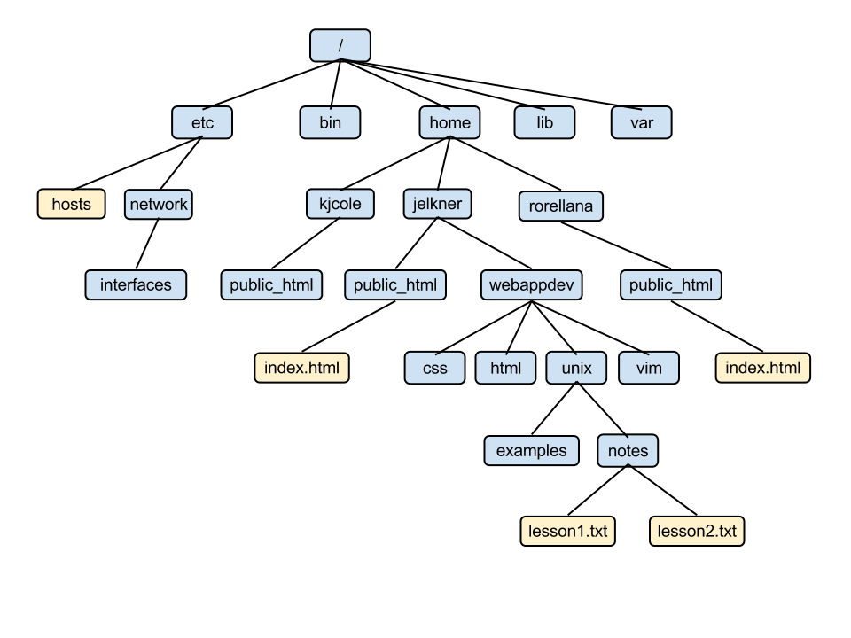

Files
A file on a modern computer system is a named block of information accessible to a computer program and stored on some type of non-volatile memory.
Files can contain both programs and data, and data files can store text, images, sound, video, and many other kinds of data. The two most common types of data files for web designers are text files and image files. Web pages are written in text files.
File systems and directories
Operating systems organize files through the use of a file system. File systems provide tools for the management of files and directories. A directory (or folder) is a special type of file that can contain other files and directories within it. Directories are used to organize files to make them easier to find.
Since a directory can have directories inside it, and those directories can directories inside them, and so on, we end up with a tree structure for the file system.
The screenshot above shows the
tree program display
of a directory named webappdev that has four subdirectories named
css, html, unix, and vim.
Each of these subdirectories has two more subdirectories named
examples and notes. The notes directory
under unix contains two files, lesson1.txt and
lesson2.txt. The .txt
filename
extention suggests these are text files.
A directory that contains a file or directory is called the
parent directory of that file or subdirectory. In the example above,
the notes directory is the parent directory of the
lesson1.txt and lesson2.txt text files, and the
webappdev directory is the parent of the css,
html, unix, and vim subdirectories.
Paths
A modern computer system has hundreds of thousands of files and directories. By utilizing the tree structure of the file system, it becomes possible to organize and manage these hundreds of thousands of files. Each file is located in a nested series of directories. The sequence of these nested directories ending with the name of the file is called the path to that file.
Absolute Paths
At the top of the Unix file system is what is called the root directory,
which is always just / in Unix. The absolute path to
any file in the filesystem is the sequence of directories, starting from the
root and ending with the file.
The easiest way to show how this works is by example. The following diagram shows part of a Unix filesystem tree.

The absolute path to the file lesson1.txt is:
/home/jelkner/webappdev/unix/notes/lesson1.txt
Relative Paths and the Current Working Directory
The absolute path to a file in the file system can be long, and it is normally
the case that the user is interested in files that are located in only one
small part of the system, located near the user. By near the user
we
mean near in the tree to the user's
current
working directory. You can think of the current working directory as your
present location as you move around the file system tree.
Again, it's much easier to show you than to tell you.

The screenshot above shows the
pwd program displaying the
current working directory as /home/jelkner/webappdev. Next
it shows ls being run, with
the css, html, unix, and
vim directories as output. Lastly, tree is run
again, this time with no
argument.
The relative path from the current working directory to the file
lesson1.txt is:
unix/notes/lesson1.txt
Notice that relative paths do not start with a slash (/).
Short Names for the Current and Parent Directories:
. and ..
In expressing relative paths we need a way to indicate both our current
working directory and its parent directory. Unix provides a very short way to
do this. The current working directory is referred to with a single dot
(.) and the parent directory is referred to with two dots
(..). Note that since each file or directory can have only a
single parent, using .. to refer to this parent directory is
unambiguous.
Our First Commands: ls, pwd, cd,
mkdir, and rmdir
The follow unix commands are used to list the contents of the current working directory, print the current working directory itself, move from one directory to another, create a new directory, and remove an existing directory.
- ls
- List the contents of the current working directory.
lshas several useful command line options which start with a-(dash) character followed by one or more letters.- ls -a
- Show hidden files and directories (files and directories whose names
begin with
.(dot). - ls -l
- Show file details using a long format.
- ls -t
- Sort listing by date, newest file first.
- ls -S
- Sort listing by size, largest file first.
ls -la,ls -lt,ls -lS, andls -latare all useful forms. - pwd
- Print working (current) directory.
- cd [
directory_name] - Change working directory to
directory_name. - mkdir [
directory_name] - Create directory
directory_name. - rmdir [
directory_name] - Remove
directory_nameif it is empty. If not empty, a warning will be returned and the directory will not be removed.
In the webappdev directory tree displayed above with the
webappdev directory located in the user's home directory
(/home/[username]/), typing the command:
cd webappdev/unix at the command prompt would change the current
working directory to /home/[username]/webappdev/unix.
Typing the ls command would then reveal the two subdirectories,
examples, and notes. Typing pwd will
display the full path to the current working directory:
/home/[username]/webappdev/unix
To move up one level in the directory tree, typing cd .. will
change the current working directory to webappdev. Typing
ls here will display the four subdirectories css,
html, unix, and vim.